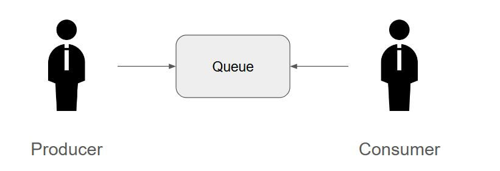
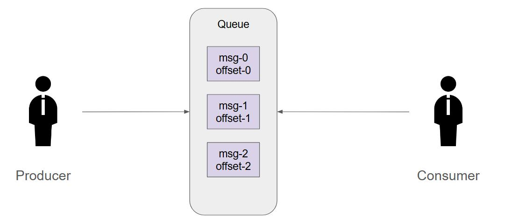
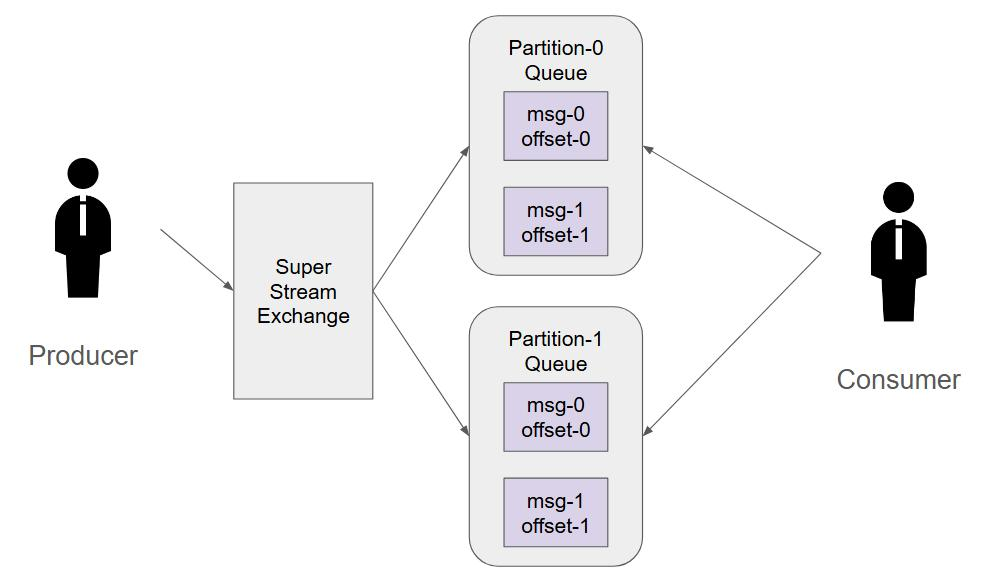

甚麼是SuperStream
要了解SuperStream前須要了解Stream，RMQ在3.9的時候推出了Stream；在此之前RMQ依循著AMQP 0.9.1讓exchange, route, queue照著協定處理訊息，並且擁有ack機制來表示訊息是否被處理過
在一些情境，過往的訊息可能會被需要提出重新檢視，原先的ack機制就無法達成這個需求，所以有了Stream這個功能；Stream可以把訊息持久話(但儲存一定有上限，所以還是要訂定保留策略)，讓過去的訊息可以被提出重新檢視；但持久化勢必會影響讀取效率，所以Stream透過二進制的方式提供服務來達成最佳吞吐量
Stream特性
- 分配訊息給大量的Queue: 若Consumer眾多會影響效能，Stream可以持久化到各節點做HA，來達成壓力分散已達高吞吐量
- Offset機制: Consumer在訂閱Stream Queue時會需要帶個Reference，這個是用來識別唯一對象，如果要實作Scale-out話，相同領域的Consumer只需帶相同的Reference即可；處理完訊息後做StoreOffset，這樣即便服務重啟，RMQ也會知道這個Reference做到哪邊，在服務啟動後讓Client啟動後可以接著繼續處理
- 高吞吐量: 因為可以持久化到各節點做HA，服務較多的Counsumer可以不影響效能
- 持久化: 有條件性的將訊息持久化
SuperStream在3.11時加入，是基於Stream的情境下對Queue實行partition策略，讓原子性的應用可以更彈性
Classic Queue概觀

Stream Queue概觀

Super Stream Queue概觀

SuperStream叢集會用到的Port
- 4369: EPMD（Erlang Port Mapper Daemon，叢集探索）
- 25672: Erlang 分散式節點內部通訊
- 5672: AMQP 0-9-1 協議
- 15672: Management Web UI
- 5552: Stream 專用協議
運行SuperStream啟用差件
1 | ## 需要四個插件啟用: rabbitmq_management,rabbitmq_stream,rabbitmq_stream_management,rabbitmq_consistent_hash_exchange |
運行SuperStream Host設定
1 | ## 方法一 透過環境變數賦予 |
SuperStream配置partition跟HA policy
1 | ## 方法一 透過rabbitmq cli指令操作 |
OffsetSpec的類型
- OffsetTypeFirst: 從第一個offset開始
- OffsetTypeLast: 從最後一個offset開始
- OffsetTypeNext: 從已處理的offset下一個開始
- OffsetTypeOffset: 指定offset開始
- OffsetTypeTimestamp: 指定時間戳記開始
OffsetSpec.OffsetTypeNext ConsumerConfig必要設定
1 | ConsumerConfig.Reference = "{唯一識別ID}" |